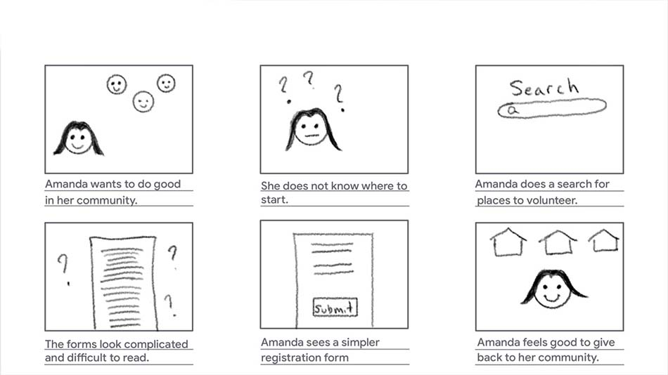

Overview
Tucson Charities
Project
Under the Google UX program, I designed a responsive website that guided a user to complete a volunteer registration form.
Target Audience
The target audience was those who volunteer in their community at least once a month or plan to volunteer in the near future.
Goal
To determine if the user can easily navigate the website and register to volunteer without much prompting. The project was completed from May to June 2021
Responsibilities
Designed the responsive website from conception to delivery i.e., conducted interviews, created paper and digital wireframes, low and high-fidelity prototypes, conducted a usability study, and accounted for accessibility.
User Research
Before I began ideating ideas for a user flow, I first conducted user interviews to understand the people I was designing for. Interviewees included adults between the ages of 21 and 38, and I asked them about their community involvement. The feedback I received from the interviews resulted in a problem statement for a user persona called Madison.
Persona
Problem Statement
Madison is a dental hygienist in a new city who needs a way to easily sign up to volunteer for a local charity because it's rewarding for her to serve her community.
Storyboards
Big Picture
Small Picture
Wireframes
To demonstrate a responsive website, I first included the homepage of the desktop version with its accompanying responsive version. Second, I included the volunteer page with its accompanying responsive screen. Below is not the complete user flow, only a sample of the wireframes used in a usability study.


Testing
The main research goal was to explore if participants can easily navigate the website and complete a registration form. I tested five participants individually in a moderated usability study. Each study session lasted about 10 minutes and participants gave feedback at the end of the session.
Results
1. Participants reported it was easy to navigate the website.
2. Users thought the registration form can be accessed through the top navigation bar.
3. Participants reported the website looked too simple.


My goal for the mockups was to design an appealing and simple website that would not take long for a user to fill-out and submit a registration form.
I incorporated user feedback and added a dropdown menu where the user can select "volunteer" instead of having to scroll down to the volunteer section. I left in place what users found comfortable and easy to use, mainly the large labels and dividers of the webpage.
For the colors, I selected a saturated red-orange and lighter orange to serve as the primary colors. Morevover, I chose these two analogous colors because I wanted to kindly match them to the beams of the Arizona state flag. Two shades of blue served as the secondary colors, which contrast well with the primary colors.
I made use of color contrast to enhance the readability of text against darker background colors. One way to increase the accessibility of the website in future testing is to include people who use switches or other assistive technologies.
I learned that responsive web design should carry the same feeling of engagement across multiple window or screen sizes.